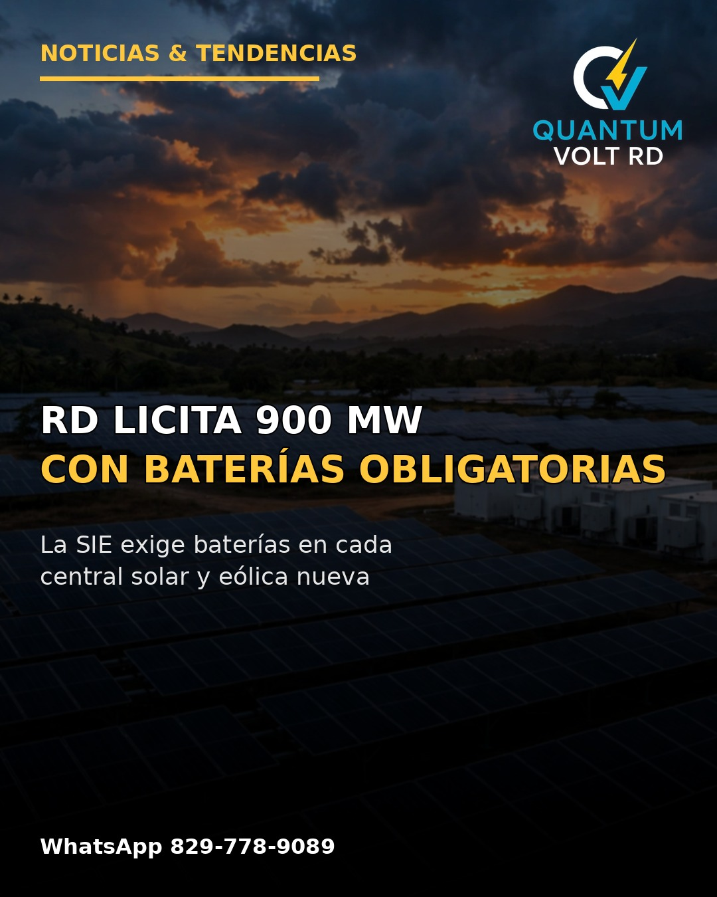

Noticia · 23 de noviembre de 2026
RD redobla la apuesta: 900 MW renovables con baterías obligatorias
23 de noviembre de 2026 · Energía solar · República Dominicana

La República Dominicana aprobó una nueva licitación de hasta 900 MW de energía solar y eólica, y esta vez con una condición clara: cada central nueva debe llevar su propio sistema de baterías, capaz de entregar energía durante 4 horas seguidas.
La Superintendencia de Electricidad (SIE) formalizó el proceso con la Resolución SIE-155-2026-LCE (convocatoria EDES-LP-NGR-01-2026), con contratos de 15 años para abastecer a EDENORTE, EDESUR y EDEESTE. Los proyectos irán de 2 a 300 MW y deberán arrancar el suministro en un máximo de 24 meses desde la firma.
Segunda vía en un mes
Es la segunda vía que abre el país en un mes: a principios de noviembre ya se licitaron 200 MW / 800 MWh de baterías para los parques renovables que ya están funcionando (Resolución SIE-141-2026-LCE, adjudicación prevista el 25 de febrero de 2027). La idea es la misma en grande y en chico: que el sol del día trabaje también de noche, en la hora pico.
Exigencias técnicas de red
Las centrales deberán cumplir exigencias técnicas de red: control de rampa (máximo 25% de la capacidad nominal por hora), regulación de frecuencia, respuesta rápida, inercia sintética, Grid Forming, regulación de tensión y arranque en negro (Black Start). Solo se admitirán proyectos solares y eólicos con concesión definitiva vigente, otorgada antes de la precalificación.
Qué significa para tu casa
En tu casa pasa igual: panel + batería te dan luz propia en la noche y en el apagón, justo cuando más se necesita. En Quantum Volt RD instalamos tu sistema solar con baterías, dimensionado para tu casa o negocio, para que un apagón no te detenga.
Cotiza tu sistema solar con baterías por WhatsApp: 829-778-9089Fuentes
- Energía Estratégica, 22 de noviembre de 2026 (actualizada el 23 de noviembre de 2026): República Dominicana redobla la apuesta y lanza nueva licitación de 900 MW renovables con baterías
← Volver a la página principal de Quantum Volt RD · Ver todas las noticias →